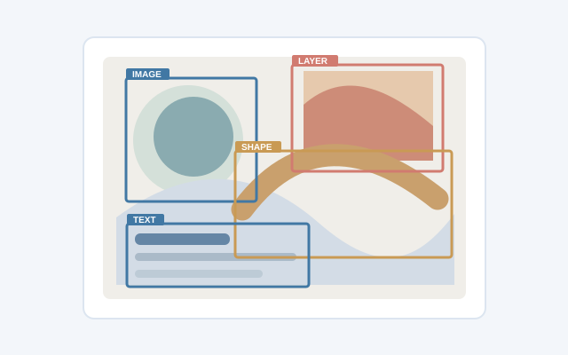

ICLR 2026
About me
I'm an undergraduate studying Software Engineering at Tsinghua University. I enjoy turning ideas in AI into practical tools that help people learn and work with information.
My interests include multimodal AI, retrieval-augmented generation, and intelligent document workflows. I also write about technology, learning, and the occasional science-fiction story.
Publications
01
arXiv 2026Detect Anything in Graphic Design: Element-Level Rewards for Autoregressive Detection
arXiv preprint arXiv:2609.07072, 2026.
An approach to detecting layered elements in graphic designs in compositional order, including occluded regions.
Selected projects
02Open-source tool
Lecture Lens
An Obsidian plugin that turns lecture slides and whiteboard photos into structured notes, with AI question answering and source-aware retrieval.
Course project
SE Practice RAG
A team-built cybersecurity question-answering assistant using retrieval-augmented generation and input safety checks.
Education
03Tsinghua University
Undergraduate · Software Engineering
Writing
04I keep notes on computer science, engineering practice, and things I learn along the way.
Read my blog